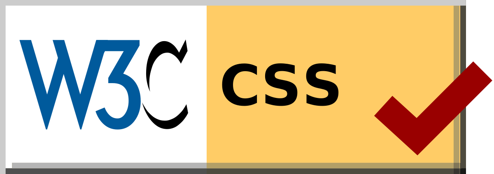
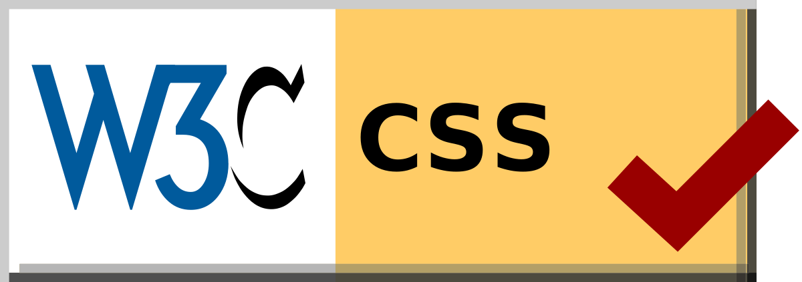

|
| Back to Top |
Tactics are a very important part of chess, as is it is the back bone of many endgames.
Pins are when your piece is in front of one of your opponent's less valuable pieces, which is in front of a valuable piece. Since your piece is threatening to take the less valuable piece, it cannot move since if it did the more valuable piece would be taken. This can also be the case with the king. If a piece were to be in front of a king, and - lets say - a rook is in front of the piece, which is in front of the king. The piece in front of the king can't move away, or else the king will be threatened.
Pins are when your piece is in front of one of your opponent's more valuable pieces, which is in front of a less valuable piece. Since your piece is threatening to take the more valuable piece, it has to move since if it didn't the more valuable piece would be taken. This can also be the case with the king. If a king were to be in front of a piece, and - lets say - a rook is in front of the king. The king is threatened, causing the king to move, which allows the rook to capture the piece behind.
Forks are when your piece is threatening to take more than 2 pieces. Since each player can move one piece at a time, this guarantees you taking one of the two pieces. A common piece in doing this tactic is the knight, since it has a unique moving method and can hurdle over pieces.